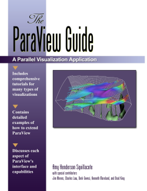

If you desire further documentation beyond what is available in ParaView's
on-line help, please see the links below.
- The ParaView Guide is currently available for purchase. Inside you
will find everything you need to get started using and extending ParaView.
This text includes introductions to parallel visualization and rendering, 3D
interactions, level of detail, and scripting. A series of step-by-step
tutorials walk you through a variety of different visualization tasks and how
to accomplish them. Each aspect of the user interface is discussed and how it
relates to the visualization in progress. The ParaView server manager is
introduced which allows you to create your own parallel visualization
applications by directly driving the server manager. The XML formats for
extending ParaView with your own algorithms and file readers are covered in
detail.
It is available from Kitware's web
site and from www.amazon.com.

- The ParaView wiki
also provides more detailed information about using and extending ParaView.